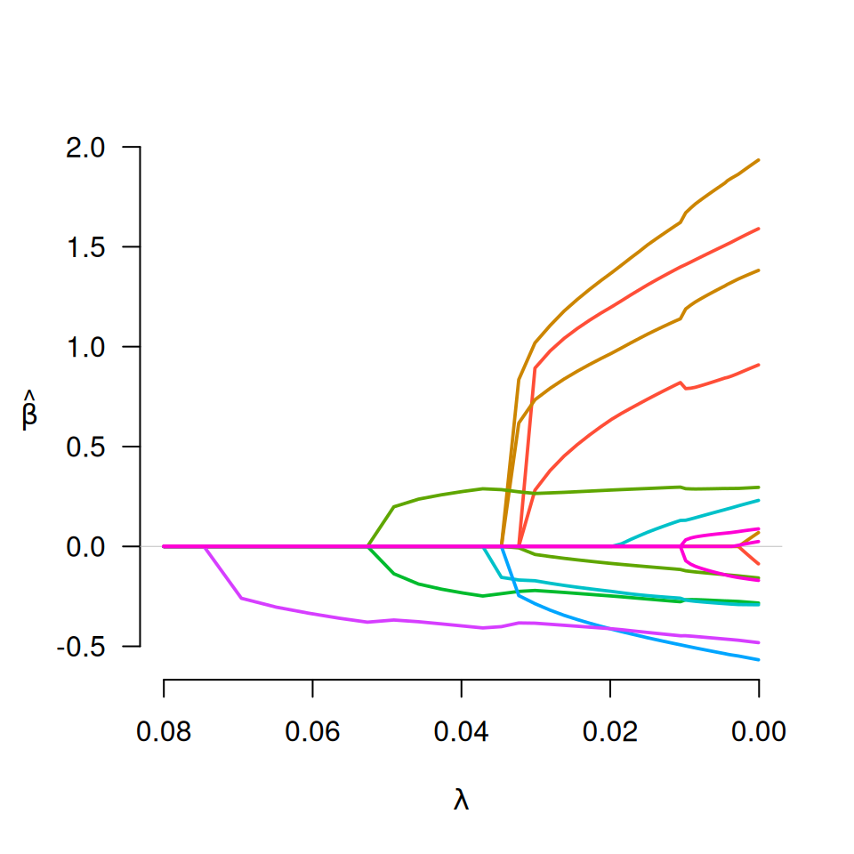
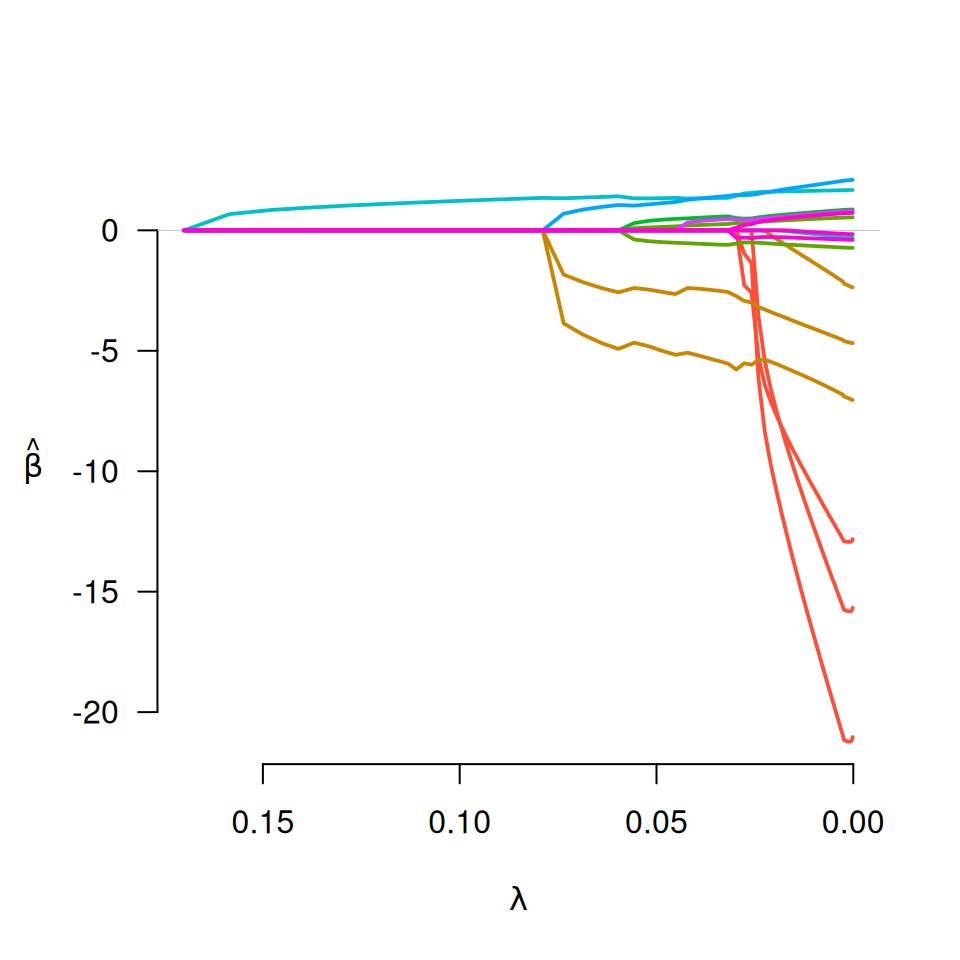

Fit regularization paths for linear and logistic group bridge-penalized regression models over a grid of values for the regularization parameter lambda.
Arguments
- X
The design matrix, as in
grpreg.- y
The response vector (or matrix), as in
grpreg.- group
The grouping vector, as in
grpreg.- family
Either "gaussian" or "binomial", depending on the response.
- nlambda
The number of
lambdavalues, as ingrpreg.- lambda
A user supplied sequence of
lambda values, as ingrpreg()`.- lambda.min
The smallest value for
lambda, as ingrpreg.- lambda.max
The maximum value for
lambda. Unlike the penalties ingrpreg, it is not possible to solve forlambda.maxdirectly with group bridge models. Thus, it must be specified by the user. If it is not specified,gBridgewill attempt to guesslambda.max, but this is not particularly accurate.- alpha
Tuning parameter for the balance between the group penalty and the L2 penalty, as in
grpreg.- eps
Convergence threshhold, as in
grpreg.- delta
The group bridge penalty is not differentiable at zero, and requires a small number
deltato bound it away from zero. There is typically no need to change this value.- max.iter
Maximum number of iterations, as in
grpreg.- gamma
Tuning parameter of the group bridge penalty (the exponent to which the L1 norm of the coefficients in the group are raised). Default is 0.5, the square root.
- group.multiplier
The multiplicative factor by which each group's penalty is to be multiplied, as in
grpreg.- warn
Should the function give a warning if it fails to converge? As in
grpreg.- returnX
Return the standardized design matrix (and associated group structure information)? Default is FALSE.
- ...
Not used.
Details
This method fits the group bridge method of Huang et al. (2009). Unlike the
penalties in grpreg, the group bridge is not differentiable at zero;
because of this, a number of changes must be made to the algorithm, which is
why it has its own function. Most notably, the method is unable to start at
lambda.max; it must start at lambda.min and proceed in the
opposite direction.
In other respects, the usage and behavior of the function is similar to the
rest of the grpreg package.
References
Huang J, Ma S, Xie H, and Zhang C. (2009) A group bridge approach for variable selection. Biometrika, 96: 339-355. doi:10.1093/biomet/asp020
Breheny P and Huang J. (2009) Penalized methods for bi-level variable selection. Statistics and its interface, 2: 369-380. doi:10.4310/sii.2009.v2.n3.a10
Examples
data(Birthwt)
X <- Birthwt$X
group <- Birthwt$group
## Linear regression
y <- Birthwt$bwt
fit <- gBridge(X, y, group, lambda.max=0.08)
plot(fit)

select(fit)$beta
#> (Intercept) age1 age2 age3 lwt1 lwt2
#> 2.99879853 0.00000000 0.89267968 0.28165358 1.01904200 0.00000000
#> lwt3 white black smoke ptl1 ptl2m
#> 0.73440772 0.26506953 -0.04018746 -0.22057682 -0.17180959 0.00000000
#> ht ui ftv1 ftv2 ftv3m
#> -0.28672009 -0.38432026 0.00000000 0.00000000 0.00000000
## Logistic regression
y <- Birthwt$low
fit <- gBridge(X, y, group, family="binomial", lambda.max=0.17)
plot(fit)

select(fit)$beta
#> (Intercept) age1 age2 age3 lwt1 lwt2
#> -1.1301892 0.0000000 0.0000000 0.0000000 -5.0796684 0.0000000
#> lwt3 white black smoke ptl1 ptl2m
#> -2.3951319 -0.5339085 0.2009164 0.4970655 1.3205915 0.0000000
#> ht ui ftv1 ftv2 ftv3m
#> 1.2699575 0.3267903 0.0000000 0.0000000 0.0000000